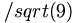

De: La Frikipedia, la enciclopedia extremadamente seria.
De: La Frikipedia, la enciclopedia extremadamente seria. De: La Frikipedia, la enciclopedia extremadamente seria.
«Habría llevado a su pueblo A un precioso lugar Para que todos gozasen En una gran bacanal»
~ Lujuria en su cancion moi-sex cuenta el secreto plan de moisex
Aunque tiene nombre de sexshop, Moisex es y ha sido el personaje bíblico más friki desde que cielo y Tierra decidieron separarse.
Moisex nació en el seno de una familia judía y con pocos recursos, así que durante muchos años estuvo mendigando. Siendo ya adolescente perdió un brazo tras apostarlo en una partida de Blackjack. Para conseguir un brazo biónico de tercera generación que pudiese suplir la falta de este miembro, Moisex tuvo que trabajar como programador encubierto del reino de Herodes.
Quizás su hazaña más venerada es la desencriptación del código fuente de la vida, del que extrajo algunas enseñanzas vigentes aún hoy en día, pero Moisex dedicó gran parte de su vida a escribir un blog personal que más adelante titularía Géminis, el cual por problemas con los derechos de autor no vio la luz.
Además de todo esto, a Moisex se le atribuye el haber reportado algunos bugs en la biblia que estaban haciendo que los creyentes cayeran en contradicciones y como consecuencia de ello se autodestruyeran en modo lemming.
También son dignas de mención sus famosas "Profecias", especialmente la que a reproductores MP se refiere y titulada: "Dictáfonos sagrados y Lollipops de caramelo":

|
[...]Llegará el día en el que una manzana no envenenada caerá del arbol del bien dando buen fruto de color blanco que será como la biblia es a nosotros y que vendra acompañado por una tunastore (almacén de atún) que será a los contemporáneos como la Iglesia lo es a nosotros. Por otro lado los malignos intentaran pudrir a la manzana sagrada sacando al mercado una castaña quemada de horribles proporciones que finalmente acabará DerRuMbándose sobre si misma como la Torre de Babel desarrollada por 3M en el 30.000 A.C. |

|
| extraido de "Dictáfonos sagrados y Lollipops de caramelo", Capítulo II: Cabilaciones |
Moisex murió en el siglo XV A.C. como consecuencia de la entrada en un bucle infinito que ni los programadores más experimentados de la época pudieron desarmar.
Autor(es):